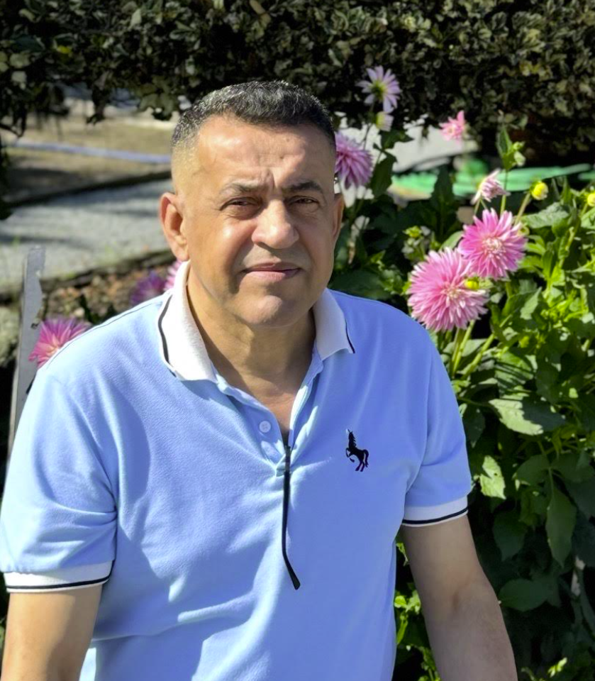

Welcome
Welcome to the bioSite of Ahmed Al-Salihi. This website highlights the life, career, and interests of a dedicated journalist, lifelong learner, and family man. Through this project I share the story of my father, whose work in journalism and passion for education have inspired many people around him.
Ahmed has spent many years building a career in journalism while always valuing education, knowledge, and curiosity about the world. His journey demonstrates perseverance, dedication, and a deep commitment to learning.
Explore the pages of this site to learn more about his life story, professional background, and hobbies including travel, photography, and storytelling.

A portrait of Ahmed Al-Salihi enjoying time outdoors. His positive outlook and dedication to learning continue to inspire those around him.